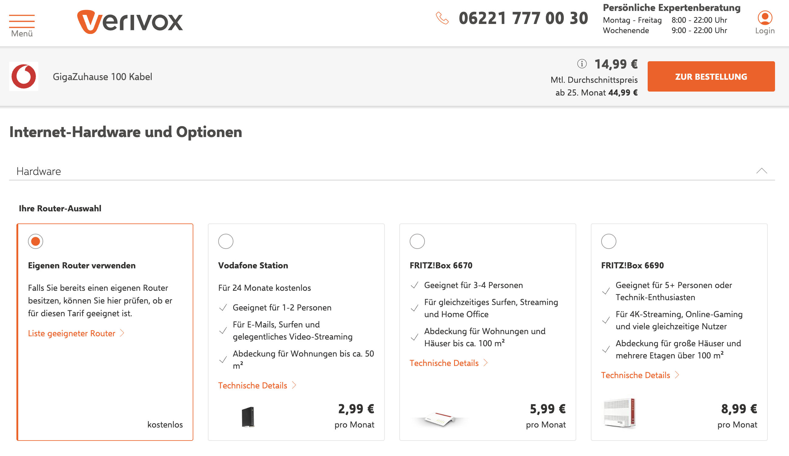

Verivox: Filling the Info Gap
A multi-touchpoint initiative to reduce decision anxiety and systematically improve conversion through clarity.
The Opportunity
Through user interviews, feedback and funnel analysis across multiple steps of the journey, we found that many customers dropped during the journey.
The underlying issue was a lack of clear and accessible information that left customers uncertain about key aspects of their sign-up.
We summarized this recurring pain point as “The Info Gap.”
The Hypothesis
If we reduce decision ambiguity across key touchpoints (router choice, process clarity, help access), we can systematically reduce friction and improve click through rate and overall conversion.
My Role
As Product Manager, I led discovery with our UX and Research teams, prioritized ideas based on impact/effort, and worked with developers to implement fast, testable changes. I was also responsible for the experiment set-up and post-test analysis.
Who We Designed For
👩⚖️ Analytical Anja
Anja dives deep, compares meticulously, and doesn’t mind spending extra for something that feels right. She's skeptical of biased advice and wants confidence before making a move.
🧐 Clockwork Christian
Christian is structured, straightforward, and efficiency-driven. He’s not looking for flash , just clarity, speed, and simplicity. If a product respects his time, he’ll respect it back.
Experiment Portfolio
We approached “The Info Gap” as a cohesive initiative and tackled it through a portfolio of experiments across key decision points.
1) Router choice clarity
+3.38% CRTranslated technical specs into human traits to reduce decision anxiety for low technical affinity users.
View experiment →
2) Process transparency
+1.98% CRReduced uncertainty about what happens next to improve confidence and click-through.
View experiment →
3) Help discoverability
+23% engagementMade help content easier to access for analytical users who need reassurance before committing.
View experiment →
4) What didn’t work
LearningsDocumented failed tests to cut scope and double down on what actually moved the metric.
View learnings →
1) Router choice clarity — Router Traits
+3.38% relative CRWhat we observed
Users with low technical affinity struggled to interpret router specs and hesitated to proceed.
What we changed
Replaced complex specs with intuitive traits: people, home size, usage (scalable via PIM).
Why it worked
Reduced ambiguity at a key decision node, improving confidence and reducing context switching.


🧪 Result: +3.38% relative conversion uplift. Clear, simple language helped customers feel confident about their choice.
🤝 Implemented with Data Management to keep traits scalable and maintainable across the catalog.
2) Process transparency — Next Steps
+1.98% relative CRWhat we observed
Users were unsure what happens after selecting a tariff (cancellation, activation, timeline), increasing drop-off.
What we changed
Added a lightweight “Next steps” explanation near the primary action to reduce uncertainty and guide progression.
Why it worked
Clarified the path forward at the moment of commitment, reducing decision anxiety.
🧪 Result: +1.98% relative conversion uplift.
Learned that explaining the process beats adding more content elsewhere — timing matters.
3) Help discoverability — FAQ CTA
+23% engagementWhat we observed
Analytical users actively searched for reassurance, but help content wasn’t discoverable at the point of doubt.
What we changed
Tested a clearer FAQ / help CTA placement and wording to increase access to reassurance content.
Why it worked
Reduced the effort to find answers, lowering friction for a key persona and improving confidence.
🧪 Result: +23% engagement on help content.
Improved findability of reassurance content for users who need validation before committing.
4) What didn’t work (and what we learned)
- Example failed test: Replace this line with your actual failed experiment and what the data taught you.
- Scope reduction insight: Replace this line with how learnings helped you cut scope and focus on high-signal ideas.
Tip: showing one failure with clear learning is a strong senior/lead signal.
Key Takeaways
Treating “The Info Gap” as a cohesive initiative helped us learn faster than isolated tweaks. Coordinated experiments across decision nodes (choice clarity, process transparency, reassurance) reduced ambiguity and improved conversion. The key lesson: on high-leverage steps, clarity beats complexity — and timing beats volume.